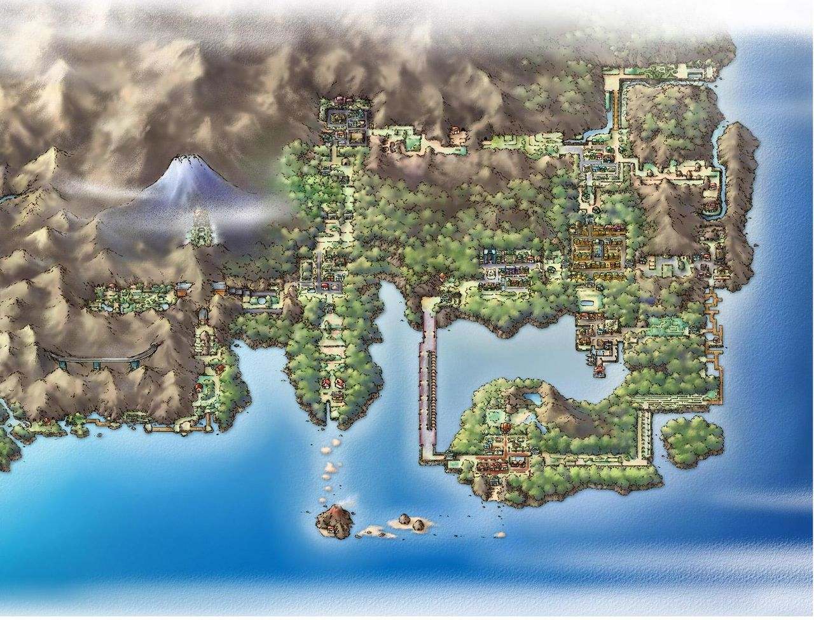

KANTO ES UNA REGIÓN DEL MUNDO POKÉMON SITUADA AL ESTE DE JOHTO Y AL SUR DE SINNOH. SU PAISAJE ESTÁ INSPIRADO EN LA ZONA DE JAPÓN DEL MISMO NOMBRE, LA REGIÓN DE KANTŌ.
KANTO PERTENECE AL MISMO CONTINENTE QUE JOHTO. EL LAZO QUE UNE AMBAS REGIONES VIENE DADO POR LAS CATARATAS TOHJO, SI BIEN TAMBIÉN ESTÁ LA RUTA 27, QUE SIRVE DE CRUCE CON LA CUEVA PLATEADA INTEGRADA EN JOHTO, PERO SEPARADA DE LOS DEMÁS LUGARES. UNA DE LAS FORMAS MÁS RÁPIDAS DE VIAJAR DE UNA REGIÓN A OTRA ES TOMANDO EL MAGNETOTRÉN, UN TREN DE ALTA VELOCIDAD QUE REALIZA EL TRAYECTO CIUDAD AZAFRÁN-CIUDAD TRIGAL. ADEMÁS DEL BARCO QUE HACE EL TRAYECTO CIUDAD OLIVO-CIUDAD CARMÍN, AUNQUE SOLO SALGA DE CIUDAD OLIVO LOS LUNES Y VIERNES, PERO DE CIUDAD CARMÍN LOS MIÉRCOLES Y DOMINGOS.
LA GRAN MAYORÍA DE LAS CIUDADES TIENE NOMBRES DE COLORES: CIUDAD VERDE, CIUDAD CELESTE, CIUDAD CARMÍN, ETC., SIENDO LA MÁS IMPORTANTE POR EXCELENCIA CIUDAD AZAFRÁN, PUES EN ELLA SE ENCUENTRA LA SEDE DEL CENTRO EMPRESARIAL MÁS IMPORTANTE DE LA REGIÓN, SILPH S.A.
KANTO ES UNA DE LAS REGIONES CON MENOS CUEVAS Y MONTAÑAS, ENTRE ELLAS DESTACA LA CUEVA DIGLETT POR SUS CARACTERÍSTICAS. ESTA CUEVA SE COMPONE ÚNICAMENTE DE UN PISO FORMADO POR UN LARGUÍSIMO TÚNEL, EL CUAL DEBE SU NOMBRE A LOS CONSTRUCTORES, DIGLETT Y DUGTRIO. OTRA CUEVA IMPORTANTE DE KANTO ES EL TÚNEL ROCA, QUE EMPIEZA EN EL NORTE DE LA RUTA 10 Y TERMINA EN EL SUR DE LA MISMA; DURANTE SU TRAYECTO CRUZA SUBTERRÁNEAMENTE LA CENTRAL DE ENERGÍA DE KANTO Y UN RÍO. ATRAVESAR EL TÚNEL ES LA ÚNICA FORMA DE LLEGAR DESDE LA RUTA 10 A PUEBLO LAVANDA. EL MONTE MOON ES OTRA DE LAS CUEVAS DE KANTO Y ES FAMOSA POR UNO DE SUS HABITANTES, CLEFAIRY Y SU RELACIÓN CON LAS PIEDRAS LUNARES, DE LAS QUE DEBE SU NOMBRE MOON, EN INGLÉS LUNA. CONECTA LA RUTA 3 Y LA RUTA 4. LA ÚLTIMA CUEVA DESTACABLE DE KANTO ES LA CUEVA CELESTE, QUE ES LA MÁS COMPLEJA Y GRANDE DE TODAS. ES UNA CUEVA DE TRES PISOS, DISPUESTOS EN FORMA DE LABERINTO Y EN CUYAS PROFUNDIDADES VIVE EL LEGENDARIO MEWTWO.
ADEMÁS, KANTO CUENTA CON OTRAS DOS CONEXIONES INTRARREGIONALES, QUE SI BIEN NO PUEDEN CONSIDERARSE CUEVAS COMO LA CUEVA DIGLETT SON TAMBIÉN SUBTERRÁNEAS. AMBAS GALERÍAS UNEN LAS RUTAS 5 Y 6 Y LAS 7 Y 8. SU ASPECTO NO ES MÁS QUE UN TÚNEL, RECTO EN CASI TODOS SUS TRAMOS. TANTO LA ENTRADA COMO SALIDA SON UN PEQUEÑO EDIFICIO CON UNAS ESCALERAS QUE DAN ACCESO AL MISMO.
KANTO CUENTA CON VARIAS ISLAS AL SUR: ISLA CANELA, DONDE SE ENCUENTRA UN GRAN VOLCÁN COMO SE VIO EN EL ANIME Y COMO MÁS TARDE SE PUDO COMPROBAR EN LOS JUEGOS DE LA SEGUNDA GENERACIÓN DEBIDO A SU ERUPCIÓN, LA CUAL DESTRUYÓ LA ISLA CASI POR COMPLETO. EL RESTO DE ISLAS SE ENCUENTRAN AL ESTE DE LA ANTERIOR, SON LAS ISLAS ESPUMA, HOGAR DEL LEGENDARIO ARTICUNO, CAUSANTE DE LAS CONDICIONES FÍSICAS DE LA CUEVA, LA CUAL ESTÁ CUBIERTA DE HIELO. POR ÚLTIMO, OTRO GRAN CONJUNTO DE ISLAS SITUADAS AL SUR DE KANTO LO COMPONEN LAS LLAMADAS ARCHI7; QUE, AUNQUE POR SU NOMBRE SE PODRÍA PENSAR QUE SON SIETE ISLAS, EN REALIDAD SON NUEVE.
LA CANTIDAD DE AGUA QUE RODEA KANTO ES CONSIDERABLE. EL ÚNICO PUERTO DE LA REGIÓN SE ENCUENTRA EN CIUDAD CARMÍN; ES EL PUERTO CARMÍN, DEL QUE PARTEN ALGUNOS BARCOS COMO EL S.S. ANNE, UN GRAN TRANSATLÁNTICO EN EL QUE VIAJAN ENTRENADORES DE TODO EL MUNDO. OTROS SON EL S.S. AQUA QUE REALIZA VIAJES ENTRE KANTO Y JOHTO O EL SURCAMAR VELOCE, QUE REALIZA VIAJES A ARCHI7.
DE KANTO TAMBIÉN CABE DESTACAR LA POCA ACCIÓN DEL HOMBRE, DEBIDO A SU GRAN VEGETACIÓN QUE RODEA CASI TODAS LAS CIUDADES Y A LA CONSERVACIÓN DEL BOSQUE VERDE, LA GRAN EXTENSIÓN ARBÓREA QUE SE ENCUENTRA AL OESTE DE LA REGIÓN. SÓLO SE PODRÍA MENCIONAR COMO ARTIFICIAL LA RUTA 12, QUE HA SIDO CONSTRUIDA COMPLETAMENTE, ALGO POCO COMÚN EN EL MUNDO POKÉMON DONDE LAS RUTAS SUELEN SER CAMINOS ABRUPTOS Y CON MUCHA VEGETACIÓN, HOGARES PROPIOS DE POKÉMON SALVAJES. ESTA RUTA SE CONSTRUYÓ SEGURAMENTE PARA FACILITAR LA COMUNICACIÓN ENTRE CIUDAD CARMÍN Y PUEBLO LAVANDA CON EL SUR DE LA REGIÓN, CIUDAD FUCSIA. LA RUTA CONSISTE EN VARIOS PUENTES PEQUEÑOS. HASTA LA CONSTRUCCIÓN DE ESTA RUTA EL ÚNICO CAMINO ALTERNATIVO ERA EL CAMINO DE BICIS, TAMBIÉN ARTIFICIAL, QUE SALE DE CIUDAD AZULONA HASTA CIUDAD FUCSIA, SUPONIENDO QUE ESTE FUESE CONSTRUIDO ANTES QUE LA RUTA 12.